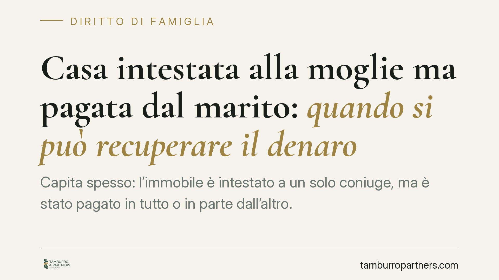

Casa intestata alla moglie ma pagata dal marito: quando si può recuperare il denaro
Capita spesso: l'immobile è intestato a un solo coniuge, ma è stato pagato in tutto o in parte dall'altro. Alla crisi del matrimonio, chi ha versato il denaro può chiederne la restituzione? La risposta dipende dalla causa dell'esborso. Un recente orientamento della Cassazione torna sul confine tra dovere di contribuzione e arricchimento senza causa.

Il problema pratico
Una casa viene acquistata durante il matrimonio e intestata solo alla moglie. Il denaro, però, proviene in tutto o in parte dal marito. Finché il rapporto regge, nessuno si pone il problema. Quando sopraggiunge la separazione, invece, chi ha pagato vuole rientrare delle somme versate.
La questione non ha una risposta automatica. Tutto ruota attorno a una domanda: perché quel denaro è stato versato? La qualificazione giuridica dell'esborso decide se la somma sia recuperabile oppure no.
Inquadramento normativo
Due sono le norme da tenere distinte.
La prima è l'art. 143 del codice civile, che impone a entrambi i coniugi l'obbligo di contribuire ai bisogni della famiglia, ciascuno in relazione alle proprie sostanze e alla propria capacità di lavoro. Se il denaro versato per la casa serve a soddisfare un'esigenza del nucleo familiare — ad esempio l'abitazione comune — rappresenta adempimento di questo dovere. In tal caso nulla è dovuto: si tratta di una prestazione che trova la sua causa nel matrimonio.
La seconda è l'art. 2041 del codice civile, che disciplina l'arricchimento senza causa. Chi si è arricchito senza una giustificazione a danno di un altro deve indennizzare quest'ultimo nei limiti dell'arricchimento. L'indennizzo, secondo la regola generale, corrisponde al minore tra l'arricchimento del beneficiario e l'impoverimento di chi agisce. È un rimedio residuale: opera solo quando non esiste altra azione contrattuale o legale a tutela dell'impoverito.
Cosa indica la giurisprudenza recente
Secondo un recente orientamento della Cassazione civile, il denaro versato da un coniuge per un immobile intestato all'altro può essere recuperato tramite l'azione di arricchimento senza causa quando l'esborso non risponde ai bisogni del nucleo familiare, ma avvantaggia soggetti terzi o la famiglia d'origine del coniuge intestatario.
La logica è lineare. Se l'apporto serve alla famiglia, la causa dell'attribuzione sta nell'art. 143 c.c. e la restituzione è esclusa. Se invece l'apporto esce dal perimetro della solidarietà familiare — perché l'immobile beneficia terzi o resta nella disponibilità esclusiva della famiglia di origine dell'intestatario — allora viene meno la giustificazione dell'arricchimento e si apre la strada all'azione ex art. 2041 c.c.
È bene distinguere ciò che è principio consolidato da ciò che è affermazione di una singola pronuncia. Consolidata è la distinzione tra contribuzione (art. 143 c.c.) e arricchimento residuale (art. 2041 c.c.). La valutazione sul caso concreto, invece, resta affidata all'accertamento di fatto: occorre dimostrare a quale finalità fosse destinato il denaro.
Cosa cambia per chi ha pagato
Per il coniuge — o il convivente — che ha versato le somme, la posizione non è affatto scontata. La prova è l'elemento decisivo. Occorre dimostrare sia l'esborso sia la sua destinazione non familiare.
Il tema interessa in modo particolare i conviventi di fatto. Tra loro non opera l'obbligo di contribuzione dell'art. 143 c.c., pensato per i coniugi. Gli apporti economici reciproci vengono spesso ricondotti all'adempimento di obbligazioni naturali, che non danno diritto a restituzione. Anche qui, però, l'azione di arricchimento può operare quando l'apporto eccede la normale solidarietà della convivenza.
Un punto da non trascurare è il termine di prescrizione. L'azione ex art. 2041 c.c. soggiace alla prescrizione ordinaria decennale: attendere troppo può precludere il recupero, a prescindere dalla fondatezza della pretesa. Il momento da cui decorre il termine va valutato caso per caso, in base alla data in cui l'arricchimento si è consolidato.
Cosa fare in concreto
- Tracciare ogni versamento. Conservare bonifici, assegni, estratti conto e documentazione bancaria che leghino il denaro all'acquisto specifico.
- Formalizzare gli apporti. Quando un coniuge finanzia l'acquisto intestato all'altro, è opportuno documentare con un atto scritto causa e finalità dell'esborso (mutuo tra privati, riconoscimento di debito, patto di restituzione).
- Verificare la destinazione del bene. Chiarire se l'immobile serva effettivamente alla famiglia o benefici terzi o la famiglia di origine dell'intestatario: è il discrimine tra rimedio esperibile e somma non recuperabile.
- Controllare i tempi. Dato il termine decennale, è opportuno esaminare per tempo la propria posizione per non incorrere nella prescrizione.
- Valutare la via più idonea. L'azione di arricchimento è residuale: occorre verificare preliminarmente se non esistano altri strumenti contrattuali o patrimoniali più diretti.
Il principio di fondo resta: non ogni euro versato in famiglia è destinato a essere restituito, ma non ogni euro è a fondo perduto. Conta la causa dell'attribuzione, e la causa va provata.
Contributo informativo a cura di Tamburro & Partners Avvocati – Avv. Giuseppe Tamburro. Non costituisce parere legale.
Ogni famiglia ha il suo equilibrio.
Separazione, divorzio, affidamento, assegno: se vuoi un confronto riservato su una specifica situazione, scrivi allo studio. Ti rispondiamo entro un giorno lavorativo.